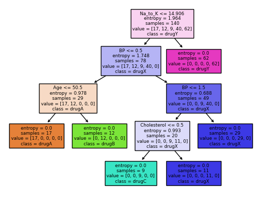
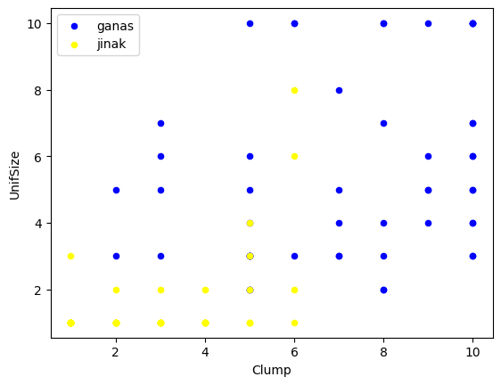
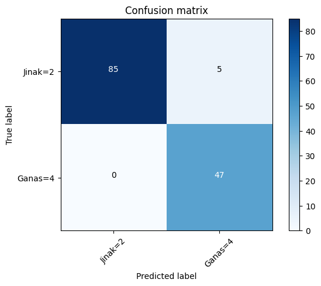

#import modul dan package
import numpy as np
import pandas as pd
from sklearn.tree import DecisionTreeClassifierModul 4 Praktikum Sains Data
Outline
- Review Evaluation Metrics pada Klasifikasi
- Decission Tree
- SVM
1. Evaluation Metrics
- Jaccard Index
Mengukur akurasi dari model menggunakan irisan dari hasil prediksi dengan value sebenarnya. \[J(y, \hat{y}) = \frac{|y \cap \hat{y}|}{|y|+|\hat{y}|-|y \cap \hat{y}|}\]
\(y=\) actual label
\(\hat{y}=\) predicted label
Contoh:
\(y = [0,0,0,0,0,1,1,1,1,1]\)
\(\hat{y} = [1,1,0,0,0,1,1,1,1,1]\)
\(|y| = 10\)
\(|\hat{y}| = 10\)
\(|\hat{y}|-|y \cap \hat{y}| = 8\)
\(J(y, \hat{y}) = \frac{|y \cap \hat{y}|}{|y|+|\hat{y}|-|y \cap \hat{y}|} = \frac{8}{10+10-8} = 0.66\)
- Rentang Jaccard index antara 0 hingga 1
- Semakin tinggi Jaccard Index, peforma model semakin baik
- Confusion Matrix, F1 Score
TN / True Negative: kasus negatif, dengan hasil prediksi negatif
TP / True Positive: kasus positif, dengan hasil prediksi positif
FN / False Negative: kasus positif, dengan hasil prediksi negatif
FP / False Positive: kasus negatif, dengan hasil prediksi positif

\[Precision = \frac{TP}{(TP+FP)}\]
\[Recall = \frac{TN}{(TP+FN)}\]
\[F1 \text{ } Score = \frac{2 . (Recall.Precision)}{(Recall+Precision)}\]
Cara mengukur performa menggunakan F-1 score dengan mengambil rata rata F1-score dari masing masing label.
Contoh, label 0 memiliki F1-score 0.72 dan label 1 memiliki F1-score 0.50.
Maka, F1-score dari model tersebut adalah 0.61
- Rentang F1-score berkisar di antara 0 hingga 1
- Semakin tinggi F1-score, maka peforma model tersebut makin baik
- Log loss
Terkadang, output dari suatu model klasifikasi berbentuk probabilitas dari suatu item memiliki label tertentu. (Contohnya pada logistic regression minggu lalu)
Kita dapat menghitung untuk masing-masing item: \[(y. \log(\hat{y}) + (1-y). \log(1-\hat{y}))\]
Kemudian, kita dapat menghitung rata rata dari tiap item tersebut \[Logloss = -\frac{1}{n} \Sigma (y. \log(\hat{y}) + (1-y). \log(1-\hat{y}))\]
\(y=\) actual label
\(\hat{y}=\) predicted probability
Contoh:

- Rentang logloss berkisar di antara 0 hingga 1
- Semakin rendah logloss, maka peforma model tersebut makin baik
2. Decision Tree
Seperti namanya, pohon keputusan, konsepnya bentuknya pohon, bercabang.
Biasanya digunakan sebagai simple binary classifier.

- Mencari fitur apa yg membuat suatu item memiliki label tertentu
- Entropy = tolak ukur seberapa random data di fitur tsb, entropy 0 artinya simpul (fitur) tsb berpengaruh terhadap klasifikasi, entropy 0 itu baik \[-P(A).\log(P(A)) - P(B).\log(P(B))\]
- Information gain : informasi yang dapat meningkatkan kejelasan dari percabangan. \(\newline\) InfoGain = Entropybefore - weightedentropyafter
- Pohon yg lebih baik adalah yang memiliki infogain lebih tinggi
Kali ini, kita akan mengklasifikasi resep obat yang cocok dari penyakit yang sama untuk fitur-fitur yang berbeda (Umur, Jenis Kelamin,Tekanan Darah, Kolestrol)
Import Module
Import Data
Pada module kali ini, akan digunakan data csv drug200 (drug200.csv) yang bisa didownload dari:
#muat dataset
my_data = pd.read_csv(r".\drug200.csv")
my_data.head()| Age | Sex | BP | Cholesterol | Na_to_K | Drug | |
|---|---|---|---|---|---|---|
| 0 | 23 | F | HIGH | HIGH | 25.355 | drugY |
| 1 | 47 | M | LOW | HIGH | 13.093 | drugC |
| 2 | 47 | M | LOW | HIGH | 10.114 | drugC |
| 3 | 28 | F | NORMAL | HIGH | 7.798 | drugX |
| 4 | 61 | F | LOW | HIGH | 18.043 | drugY |
my_data.shape(200, 6)#melihat ada brp value berbeda pada feature/kolom Drug
my_data["Drug"].unique()array(['drugY', 'drugC', 'drugX', 'drugA', 'drugB'], dtype=object)#feature/kolom pada dataframe
my_data.columnsIndex(['Age', 'Sex', 'BP', 'Cholesterol', 'Na_to_K', 'Drug'], dtype='object')#melihat value per baris
X = my_data[['Age', 'Sex', 'BP', 'Cholesterol', 'Na_to_K']].values
X[0:5]array([[23, 'F', 'HIGH', 'HIGH', 25.355],
[47, 'M', 'LOW', 'HIGH', 13.093],
[47, 'M', 'LOW', 'HIGH', 10.114],
[28, 'F', 'NORMAL', 'HIGH', 7.798],
[61, 'F', 'LOW', 'HIGH', 18.043]], dtype=object)Preprocessing
Pada bagian ini, kita akan mengubah value kategorik menjadi data numerik
from sklearn import preprocessing
le_sex = preprocessing.LabelEncoder()
le_sex.fit(['F', 'M'])
X[:, 1] = le_sex.transform(X[:, 1]) #sex di kolom kedua df, indexnya 1
X[0:5]array([[23, 0, 'HIGH', 'HIGH', 25.355],
[47, 1, 'LOW', 'HIGH', 13.093],
[47, 1, 'LOW', 'HIGH', 10.114],
[28, 0, 'NORMAL', 'HIGH', 7.798],
[61, 0, 'LOW', 'HIGH', 18.043]], dtype=object)le_bp = preprocessing.LabelEncoder()
le_bp.fit(['LOW', 'NORMAL', 'HIGH'])
X[:, 2] = le_bp.transform(X[:, 2]) #sex di kolom ketiga df, indexnya 2
le_chol = preprocessing.LabelEncoder()
le_chol.fit(['NORMAL', 'HIGH'])
X[:, 3] = le_chol.transform(X[:, 3]) #sex di kolom keempat df, indexnya 3
X[0:5]array([[23, 0, 0, 0, 25.355],
[47, 1, 1, 0, 13.093],
[47, 1, 1, 0, 10.114],
[28, 0, 2, 0, 7.798],
[61, 0, 1, 0, 18.043]], dtype=object)y = my_data['Drug']
y[0:5]0 drugY
1 drugC
2 drugC
3 drugX
4 drugY
Name: Drug, dtype: objectTrain/Test Split
from sklearn.model_selection import train_test_split
X_train, X_test, y_train, y_test = train_test_split(X, y, test_size = 0.3)print(X_train.shape)
print(y_train.shape)(140, 5)
(140,)print(X_test.shape)
print(y_test.shape)(60, 5)
(60,)Modelling
from sklearn.tree import DecisionTreeClassifierdrugtree = DecisionTreeClassifier(criterion = 'entropy', max_depth = 4)drugtree.fit(X_train, y_train)DecisionTreeClassifier(criterion='entropy', max_depth=4)In a Jupyter environment, please rerun this cell to show the HTML representation or trust the notebook.
On GitHub, the HTML representation is unable to render, please try loading this page with nbviewer.org.
DecisionTreeClassifier(criterion='entropy', max_depth=4)
predTree = drugtree.predict(X_test)
predTreearray(['drugC', 'drugY', 'drugX', 'drugY', 'drugX', 'drugX', 'drugY',
'drugX', 'drugY', 'drugX', 'drugY', 'drugC', 'drugC', 'drugY',
'drugB', 'drugX', 'drugA', 'drugY', 'drugY', 'drugC', 'drugX',
'drugC', 'drugX', 'drugY', 'drugY', 'drugB', 'drugB', 'drugC',
'drugY', 'drugY', 'drugY', 'drugY', 'drugC', 'drugY', 'drugY',
'drugY', 'drugY', 'drugY', 'drugA', 'drugX', 'drugY', 'drugY',
'drugY', 'drugB', 'drugY', 'drugY', 'drugA', 'drugA', 'drugX',
'drugX', 'drugY', 'drugY', 'drugY', 'drugY', 'drugX', 'drugX',
'drugX', 'drugA', 'drugY', 'drugA'], dtype=object)#bandingkan nilai y pada data uji dengan hasil prediksi
comparison = {"y_test" : y_test,
"Predicted": predTree}
comp = pd.DataFrame(comparison)
comp| y_test | Predicted | |
|---|---|---|
| 10 | drugC | drugC |
| 90 | drugY | drugY |
| 132 | drugX | drugX |
| 23 | drugY | drugY |
| 145 | drugX | drugX |
| 34 | drugX | drugX |
| 154 | drugY | drugY |
| 37 | drugX | drugX |
| 49 | drugY | drugY |
| 58 | drugX | drugX |
| 123 | drugY | drugY |
| 47 | drugC | drugC |
| 195 | drugC | drugC |
| 121 | drugY | drugY |
| 108 | drugB | drugB |
| 135 | drugX | drugX |
| 61 | drugA | drugA |
| 24 | drugY | drugY |
| 157 | drugY | drugY |
| 84 | drugC | drugC |
| 181 | drugX | drugX |
| 102 | drugC | drugC |
| 45 | drugX | drugX |
| 19 | drugY | drugY |
| 125 | drugY | drugY |
| 142 | drugB | drugB |
| 41 | drugB | drugB |
| 2 | drugC | drugC |
| 166 | drugY | drugY |
| 94 | drugY | drugY |
| 28 | drugY | drugY |
| 9 | drugY | drugY |
| 193 | drugC | drugC |
| 74 | drugY | drugY |
| 164 | drugY | drugY |
| 91 | drugY | drugY |
| 115 | drugY | drugY |
| 88 | drugY | drugY |
| 36 | drugA | drugA |
| 160 | drugX | drugX |
| 172 | drugY | drugY |
| 48 | drugY | drugY |
| 22 | drugY | drugY |
| 136 | drugB | drugB |
| 62 | drugY | drugY |
| 165 | drugY | drugY |
| 140 | drugA | drugA |
| 100 | drugA | drugA |
| 81 | drugX | drugX |
| 159 | drugX | drugX |
| 75 | drugY | drugY |
| 0 | drugY | drugY |
| 29 | drugY | drugY |
| 12 | drugY | drugY |
| 63 | drugX | drugX |
| 182 | drugX | drugX |
| 105 | drugX | drugX |
| 176 | drugA | drugA |
| 33 | drugY | drugY |
| 174 | drugA | drugA |
Akurasi
from sklearn.metrics import accuracy_score
print("Accuracy : ", accuracy_score(y_test, predTree))Accuracy : 1.0Visualisasi Decision Tree
from sklearn import treefeatureNames = my_data.columns[0:5]
graph = tree.plot_tree(drugtree,
feature_names=featureNames,
class_names=np.unique(y_train),
filled=True)
3. Support Vector Machine
SVM adalah algoritma supervised learning utk klasifikasi dengan cara menemukan separator berupa hyperplane (biasanya utk binary classification)
- Petakan fitur (kolom, bentuk awalnya 1d) ke ruang dimensi yg lebih tinggi (contohnya 3D) menggunakan fungsi kernel (linear, Radial Basis Function, polinom, sigmoid, dsb)
- Temukan separatornya (utk di ruang 3d biasanya bentuknya bidang)
- Hyperplane yg baik adalah yg memiliki margin lebih besar (jarak ke support vector)

Kali ini, kita akan melakukan klasifikasi sebuah cell apakah cell tersebut jinak atau ganas (berpotensi kanker)
#install dulu package bila belum memiliki sklearn
!pip install scikit-learn==0.23.1Import Module
#import modul yang diperlukan
import pandas as pd
import pylab as pl
import numpy as np
import scipy.optimize as opt
from sklearn import preprocessing
from sklearn.model_selection import train_test_split
%matplotlib inline
import matplotlib.pyplot as pltImport Dataset
Pada module kali ini, akan digunakan data csv cell samples (cell_samples.csv) yang bisa didownload dari:
#memuat dataframe
cell_df=pd.read_csv(r".\cell_samples.csv")cell_df.head()| ID | Clump | UnifSize | UnifShape | MargAdh | SingEpiSize | BareNuc | BlandChrom | NormNucl | Mit | Class | |
|---|---|---|---|---|---|---|---|---|---|---|---|
| 0 | 1000025 | 5 | 1 | 1 | 1 | 2 | 1 | 3 | 1 | 1 | 2 |
| 1 | 1002945 | 5 | 4 | 4 | 5 | 7 | 10 | 3 | 2 | 1 | 2 |
| 2 | 1015425 | 3 | 1 | 1 | 1 | 2 | 2 | 3 | 1 | 1 | 2 |
| 3 | 1016277 | 6 | 8 | 8 | 1 | 3 | 4 | 3 | 7 | 1 | 2 |
| 4 | 1017023 | 4 | 1 | 1 | 3 | 2 | 1 | 3 | 1 | 1 | 2 |
#melihat sebaran datanya menggunakan scatterplot
ax = cell_df[cell_df['Class']==4][0:50].plot(kind='scatter', x='Clump', y = 'UnifSize', color = 'Blue',
label = 'ganas')
cell_df[cell_df['Class']==2][0:50].plot(kind='scatter', x='Clump', y = 'UnifSize', color = 'Yellow',
label ='jinak',ax=ax)
plt.show()
Preprocessing
#cek type dari masing2 feature/kolom
cell_df.dtypesID int64
Clump int64
UnifSize int64
UnifShape int64
MargAdh int64
SingEpiSize int64
BareNuc object
BlandChrom int64
NormNucl int64
Mit int64
Class int64
dtype: objectcell_df = cell_df[pd.to_numeric(cell_df['BareNuc'],errors="coerce").notnull()] #mengatasi value yg error menjadi NaN
cell_df['BareNuc']=cell_df['BareNuc'].astype('int') #mengubah type menjadi integer
cell_df.dtypesID int64
Clump int64
UnifSize int64
UnifShape int64
MargAdh int64
SingEpiSize int64
BareNuc int32
BlandChrom int64
NormNucl int64
Mit int64
Class int64
dtype: objectTrain Test Split
#set X
feature_df = cell_df[['Clump', 'UnifSize','UnifShape','MargAdh','SingEpiSize','BareNuc','BlandChrom','NormNucl','Mit']].values
X = np.asarray(feature_df)
X[0:5]array([[ 5, 1, 1, 1, 2, 1, 3, 1, 1],
[ 5, 4, 4, 5, 7, 10, 3, 2, 1],
[ 3, 1, 1, 1, 2, 2, 3, 1, 1],
[ 6, 8, 8, 1, 3, 4, 3, 7, 1],
[ 4, 1, 1, 3, 2, 1, 3, 1, 1]], dtype=int64)#set Y
cell_df['Class'] = cell_df['Class'].astype('int')
y=np.asarray(cell_df['Class'])
y[0:5]array([2, 2, 2, 2, 2])#train-test split
train_x,test_x,train_y,test_y=train_test_split(X,y, test_size=0.2,random_state=4)
print('Train set:', train_x.shape,train_y.shape)
print('Train set:', test_x.shape,test_y.shape)Train set: (546, 9) (546,)
Train set: (137, 9) (137,)Modelling
#membuat model
from sklearn import svm
clf = svm.SVC(kernel='rbf')
clf.fit(train_x,train_y)SVC()In a Jupyter environment, please rerun this cell to show the HTML representation or trust the notebook.
On GitHub, the HTML representation is unable to render, please try loading this page with nbviewer.org.
SVC()
#Prediksi
yhat = clf.predict(test_x)
yhat[0:5]array([2, 4, 2, 4, 2])Evaluasi
#jaccard score
from sklearn.metrics import jaccard_score
jaccard_score(test_y,yhat,pos_label=2)0.9444444444444444#f1-score
from sklearn.metrics import f1_score
f1_score(test_y,yhat,pos_label=2)0.9714285714285714#visualisasi confusion matrix
from sklearn.metrics import classification_report, confusion_matrix
import itertools
def plot_confusion_matrix(cm, classes,
normalize=False,
title='Confusion matrix',
cmap=plt.cm.Blues):
"""
This function prints and plots the confusion matrix.
Normalization can be applied by setting `normalize=True`.
"""
if normalize:
cm = cm.astype('float') / cm.sum(axis=1)[:, np.newaxis]
print("Normalized confusion matrix")
else:
print('Confusion matrix, without normalization')
print(cm)
plt.imshow(cm, interpolation='nearest', cmap=cmap)
plt.title(title)
plt.colorbar()
tick_marks = np.arange(len(classes))
plt.xticks(tick_marks, classes, rotation=45)
plt.yticks(tick_marks, classes)
fmt = '.2f' if normalize else 'd'
thresh = cm.max() / 2.
for i, j in itertools.product(range(cm.shape[0]), range(cm.shape[1])):
plt.text(j, i, format(cm[i, j], fmt),
horizontalalignment="center",
color="white" if cm[i, j] > thresh else "black")
plt.tight_layout()
plt.ylabel('True label')
plt.xlabel('Predicted label')
print(confusion_matrix(test_y, yhat, labels=[2,4]))[[85 5]
[ 0 47]]#confusion matrix
cnf_matrix =confusion_matrix(test_y, yhat, labels=[2,4])
plt.figure()
plot_confusion_matrix(cnf_matrix,classes=['Jinak=2', 'Ganas=4'],normalize = False, title='Confusion matrix')Confusion matrix, without normalization
[[85 5]
[ 0 47]]